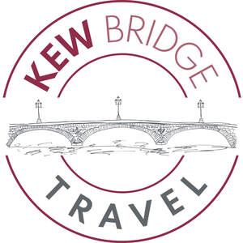
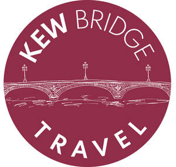

Trade Mark Journal No.2026/010 6 March 2026
UK00004342390 18 February 2026 (39)
Mark 1

Mark 2

- Class 39
- Travel consultancy; Travel guide and travel information services; Travel agency services for arranging travel; Travel agency services for business travel; Itinerary travel advice services; Travel agents services for arranging travel; Travel agency services for arranging holiday travel; Consultancy for travel planning of routes; Organization of travel; Travel organization; Travel route planning; Booking agency services for travel; Booking agency services for airline travel; Travel services; Organisation of travel; Travel organisation; Travel information; Arranging for travel visas and travel documents for persons travelling abroad; Travel arrangements; Travel booking agencies; Agency services for arranging travel; Organization of travel tours; Agents for arranging travel; Arranging of business travel; Organisation of travel tours; Services for the booking of travel; Organising of foreign travel; Arranging of travel; Travel reservation; Reservation (Travel -); Arranging for travel visas, passports and travel documents for persons traveling abroad; Travel arrangement; Arrangement of travel; Travel consultancy and information services; Reservation services for airline travel; Booking agency services relating to travel; Travel reservations; Tourist travel reservation services; Tour operator services for the booking of travel; Travel agency services, namely arranging transportation for travelers; Planning, arranging and booking of travel; Organization of travel and boat trips; Reservation services for travel; Travel reservation services; Organising of travel; Arranging of transportation for travel tours; Planning and booking of airline travel, via electronic means; Travel information services; Arranging travel tours; Arranging of travel tours; Tours (Arranging of travel -); Arranging and booking of travel; Travel arrangement services; Arranging of transport and travel; Ticket booking services for travel; Organizing of travel; Ticketing services for travel; Travel and transport reservation services; Travel and passenger transportation; Providing tourist travel information; Arranging of overseas travel for cultural purposes; Arrangement of travel to and from hotels; Booking of holiday travel and tours; Organisation of holiday travel; Travel arrangement and reservation services; Travel and tour ticket reservation service; Travel ticket reservation services; Ticket reservation services for travel; Ticket reservation services (Travel -); Holiday travel reservation services; Seat reservation services for travel; Provision of tourist travel information; Travel reservation and booking services; Planning and booking of travel and transport, via electronic means; Arranging holiday travel; Air travel services; Reservation services for air travel; Booking of tickets for travel; Providing transport and travel information; Services for the booking of seats for travel; Arranging of air travel; Travel agency services, namely, making reservations and bookings for transportation; Providing information relating to the planning and booking of airline travel, via electronic means; Cruise ship services [for travel]; Agency services for arranging the transportation of travellers; Booking of tickets for train travel; Booking of seats (travel); Booking of seats for travel; Planning, arranging and booking of travel by electronic means; Making travel reservations (Services for -); Reservation services for travel by air; Providing tourist travel information, via the Internet; Trip planning services; Arranging and booking of travel for package holidays; Package holiday services for arranging travel; Provision of travel information; Making travel bookings (Services for -); Information services relating to travel.
Kew Bridge Travel Limited